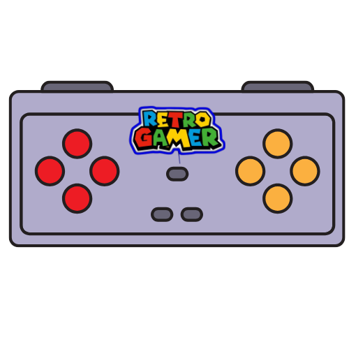

Derechos Reservados
© 2025 ConsolaCrítica. Todos los derechos reservados. El contenido publicado en este blog, incluyendo reseñas, artículos, imágenes, y opiniones sobre consolas de videojuegos, es propiedad exclusiva de ConsolaCrítica y está protegido por las leyes de derechos de autor. Queda estrictamente prohibida la reproducción total o parcial de cualquier material sin la autorización previa y por escrito del autor. Esto incluye, pero no se limita a, la copia de textos, rediseño gráfico, distribución en otras plataformas o usos comerciales. Las marcas mencionadas (PlayStation, Xbox, Nintendo, etc.) pertenecen a sus respectivos propietarios y son utilizadas únicamente con fines informativos y de análisis crítico. Para solicitar permisos de uso o reportar algún uso indebido del contenido, podés contactarnos a través de la sección de Contacto.
